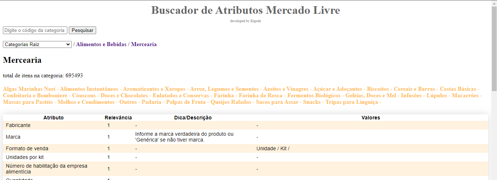
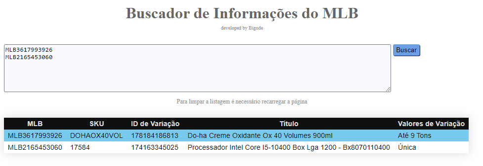
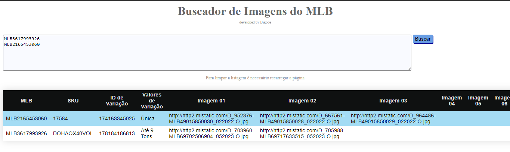
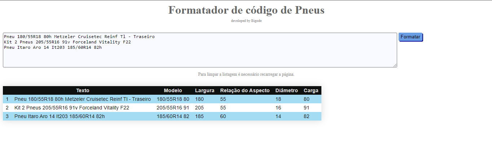
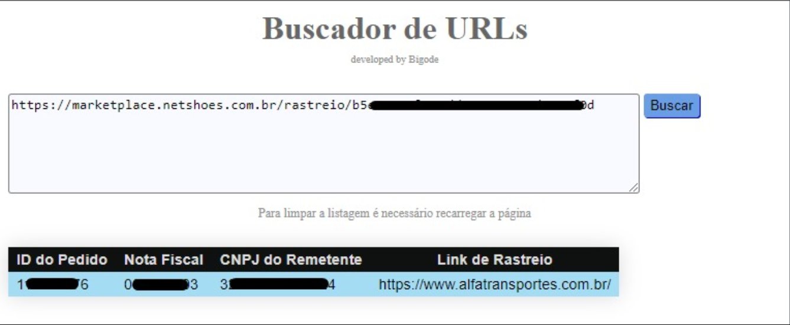
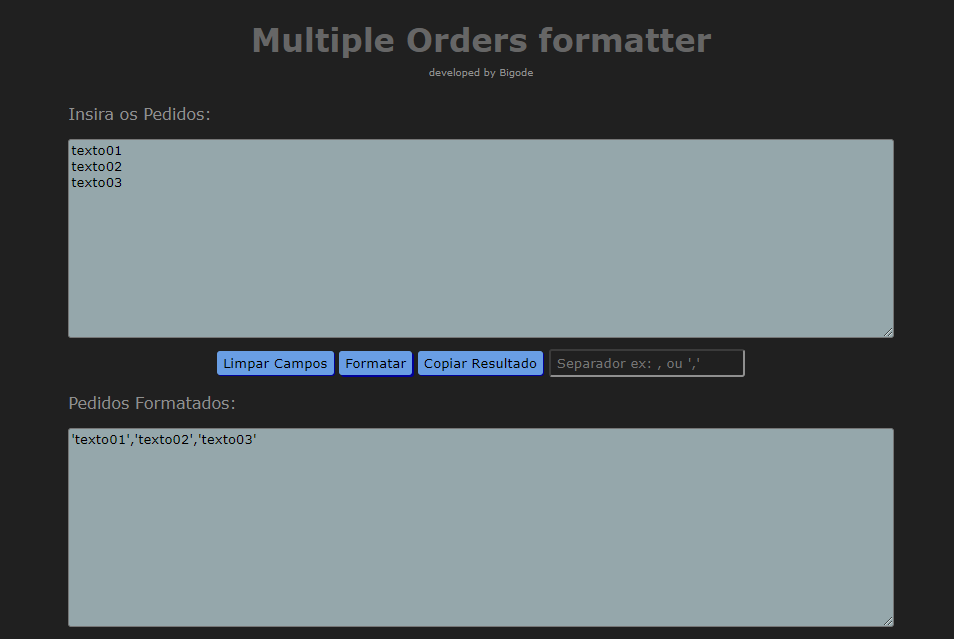

Single File Projects
Simple projects made in HTML that can fit in one single file.
Developed for daily use cases
Buscador de Categorias Meli
Busca os atributos permitidos para a categoria com base na API do Mercado Livre. Sua utilidade se aplica a entender quais atributos são obrigatórios e quais outros são processados pelo marketplace, podendo assim melhorar a qualidade do anúncio para uma maior visibilidade.
modo escuro e com algumas melhorias Buscador de Informações do MLB
Busca os seguintes dados do anúncio: SKU (se existir), id da variação (se existir), título e valores de variação.
Extrator de imagens por MLB
Gets the publications image urls as well as it's SKU, variation id and variation values.
Leitor de códigos de Pneus
Lê títulos ou apenas códigos de pneus e extrai informações como Largura, Aspecto, Tipo de Construção, Diâmetro, Carga e Taxa de Velocidade.
Extrator de link Netshoes
Extrai os links de rastreio originais juntamente dos ids dos pedidos.
Formatador de Textos V2
Concatena valores separador por linhas. Intuito inicial era a concatenação de vírgulas e aspas para CURLs e consultas no banco de dados.
